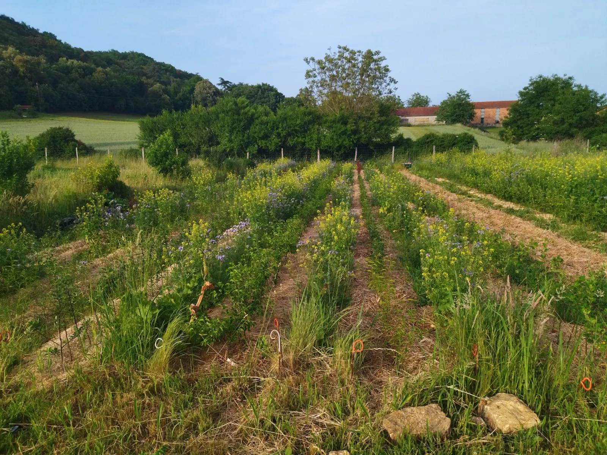
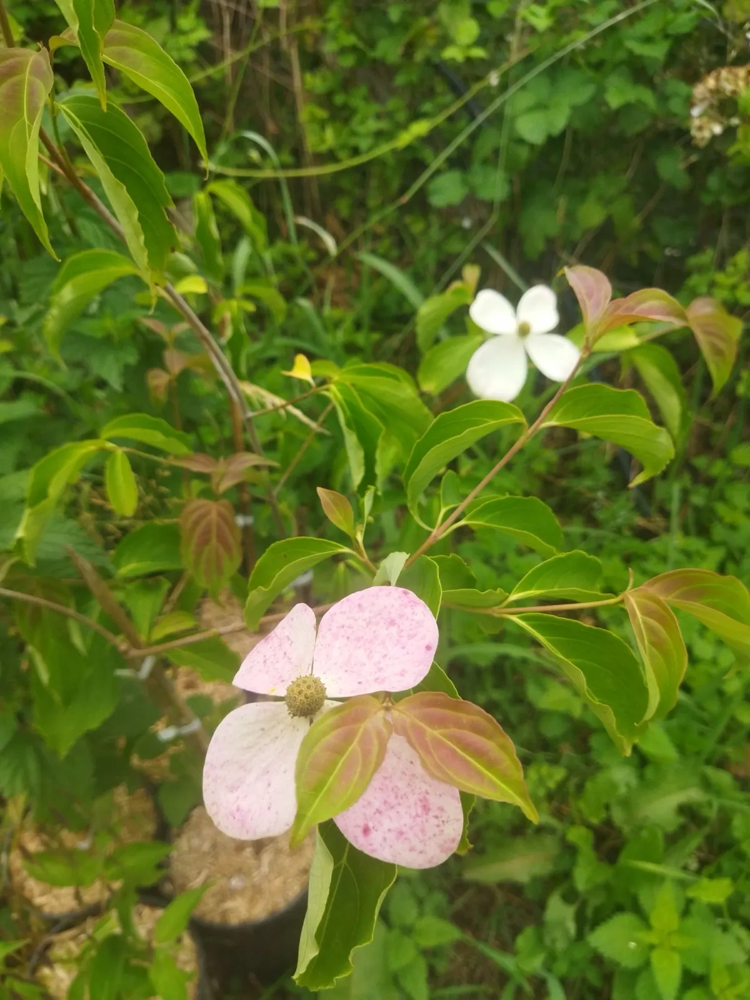
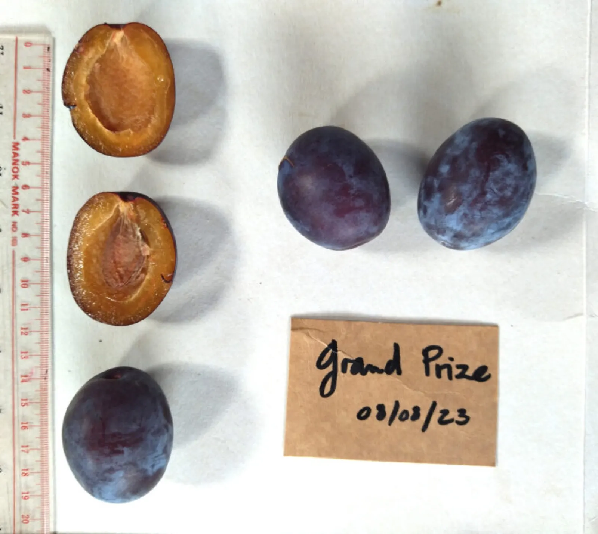
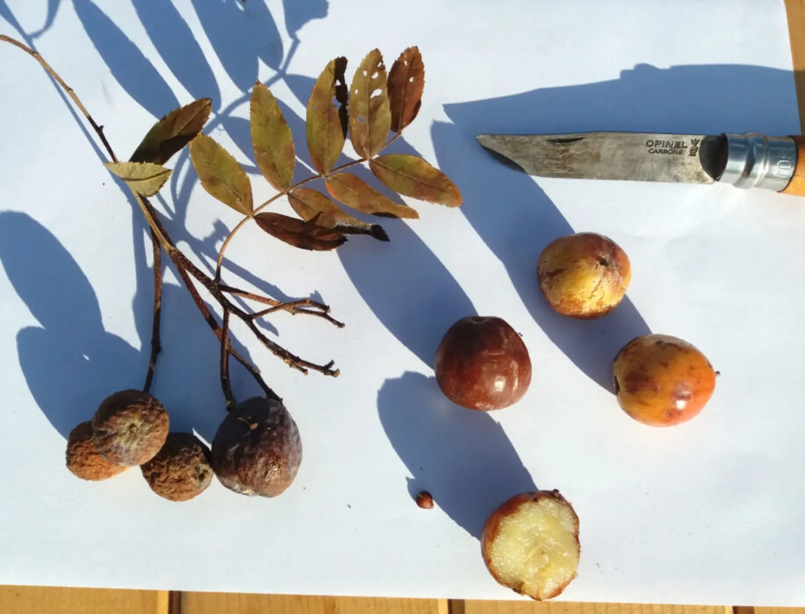
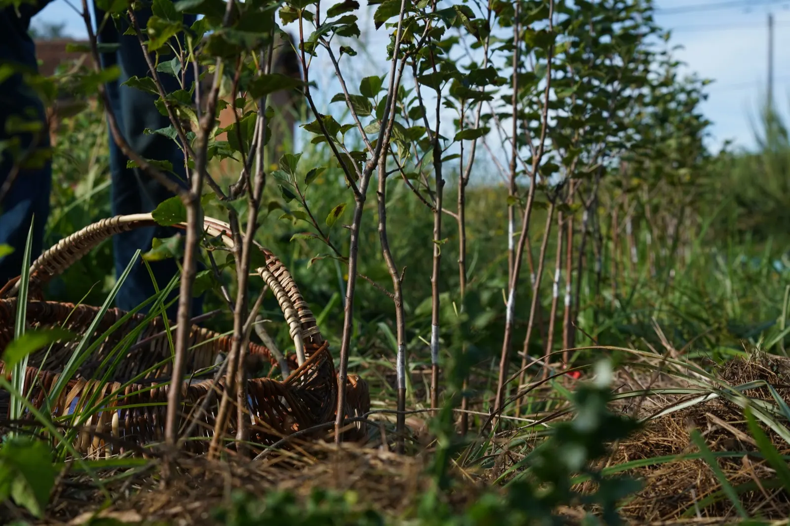
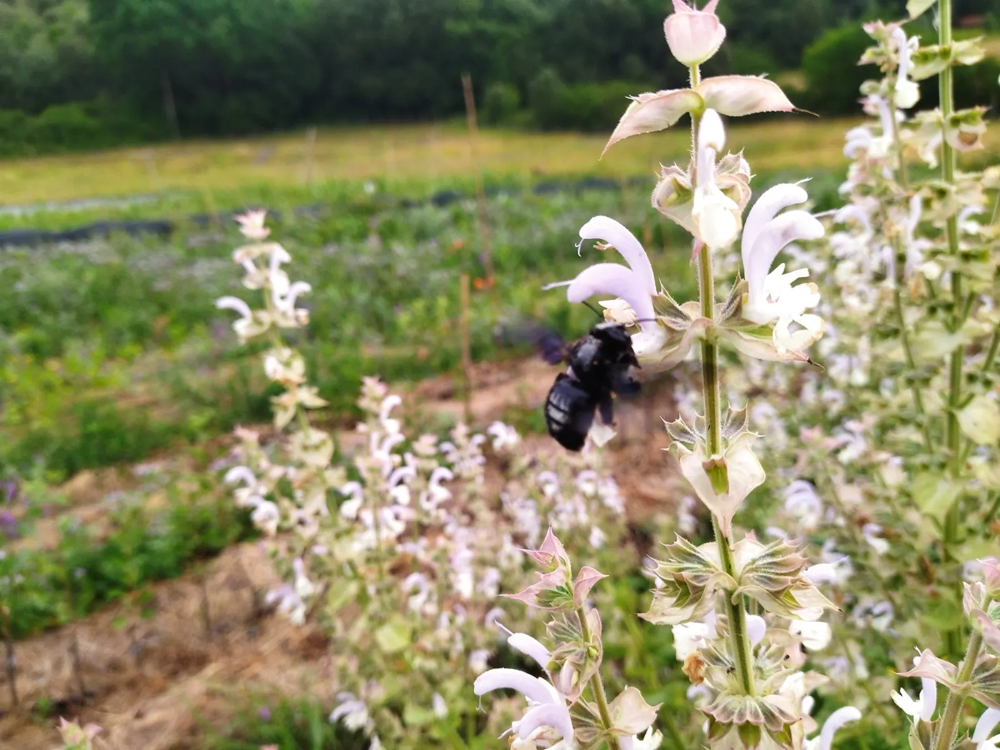
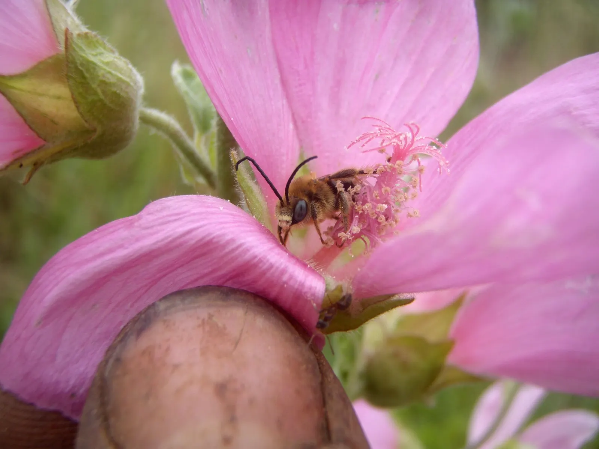
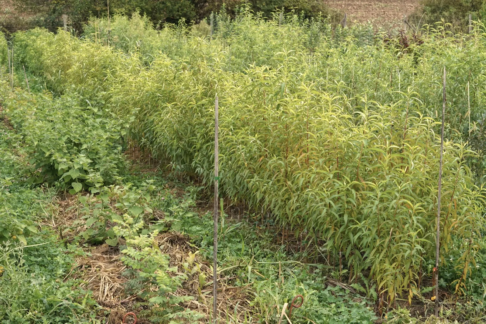
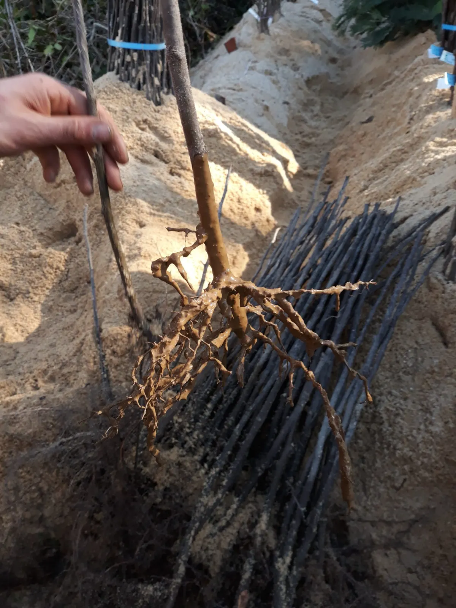

Plants fruitiers bio pour jardins, vergers et forêts fruitières

Variétés anciennes, espèces rares et exotiques rustiques. Les commandes pour la saison 2026-27 sont ouvertes : réservez vos arbres en ligne et retirez-les à la pépinière, à Lalinde.
Ou parcourez le catalogue 2026-27, toutes nos variétés.
- Depuis 2019à Lalinde, dans le Périgord pourpre
- Biocertifiée AB, sans aucun intrant chimique
- 5 500 arbresenviron, produits chaque année
- Porte-greffesplusieurs au choix pour une même variété
- 40 kmlivraison possible autour de Lalinde, pas d'expédition
Catalogue des fruitiers
Toutes nos variétés. Les arbres particulièrement appréciés des butineurs y sont signalés par un petit symbole.
Toutes nos variétés
Une multitude d'essences fruitières, choisies pour leur résistance aux maladies, leur vigueur et leurs goûts délicieux ou surprenants. Les quantités par espèce sont volontairement limitées.
Les classiques
Abricotiers, cerisiers, pêchers et brugnoniers, pruniers, pommiers, poiriers, nashis, cognassiers, néfliers, figuiers, mûriers, amandiers, noisetiers, noyers, oliviers, plaqueminiers…
Les exotiques rustiques
Agrumes rustiques, asiminiers, bananier, cudranier, feijoa, grenadiers, hovénie, néflier du Japon…
Buissons et arbustes fruitiers
Amélanchiers, aronias, sorbus, aubépines fruitières, cassissiers et groseilliers, camerisiers…
Les arbres utiles
Arbustes sauvages pour haies et greffes, et quelques arbres non fruitiers, mellifères ou fixateurs d'azote.
Certaines petites séries, raretés ou nouveautés, ne figurent ni sur le site ni dans le catalogue faute de quantité : vous les trouverez à la pépinière ou sur les stands des fêtes des plantes.
Quelques arbres de la saison
Les stocks affichés en ligne sont à jour. Réservez, puis venez chercher vos arbres à la pépinière.



- Poirier ‘Saint Jean’Les classiques20 €
- Caseiller ‘Josta’Cassissiers et groseilliers9 €
La pépinière
Installée en 2019 à Lalinde, dans le Périgord pourpre. Le choix a été fait de privilégier la qualité des plants et la diversité des essences.



Au-delà de la certification bio
Nous travaillons sans aucun intrant chimique, dans le respect du sol, en évitant de le laisser à nu et en favorisant une abondante biodiversité végétale et animale.
Des arbres pour la biodiversité
Planter des fruitiers nourrit une faune importante, dont des prédateurs, insectes et oiseaux, qui protègent en retour les arbres contre les ravageurs. Beaucoup de fruitiers sont mellifères : le catalogue les signale par un petit symbole.

Un verger-arboretum est planté au fil des années : un espace de collection et de diversité qui permettra de faire goûter les fruits de nos variétés.

Un arbre pour votre sol
Nos fruitiers sont adaptés à différents types de sol, et demandent plus ou moins de lumière et d'espace. Pour une même variété, nous proposons plusieurs porte-greffes : de quoi l'adapter au sol de votre jardin, avec un arbre plus ou moins vigoureux.
Exposez-nous votre projet : nous vous conseillerons les arbres les plus adaptés.
Arbres sur-mesure
Une variété donnée, sur un porte-greffe donné, en quantité :
- séries de 5 arbres identiques minimum ;
- commande avant mi-février 2027 pour des plants à recevoir dès décembre 2027 (décembre 2028 pour les pêchers).
Une variété à sauver ?
Un vieil arbre de famille dont on a toujours mangé les fruits, sans savoir quelle variété c'est ? Le multiplier pour le répandre, ou le « cloner » s'il est en fin de vie : c'est possible.
Retirer ses arbres à la pépinière
Venez chercher vos commandes, ou acheter des arbres sur place, les vendredis après-midi et samedis matin, sur rendez-vous. Appelez au moins une semaine à l'avance pour que nous préparions votre passage.
- Racines nuesde fin novembre à fin mars
- Plantes en potd'octobre à mai
- Livraisonpossible à 40 km maximum de Lalinde. Pas d'expédition.
Retrouvez la pépinière à la Fête de l'arbre de Lalinde, le samedi 28 novembre 2026.